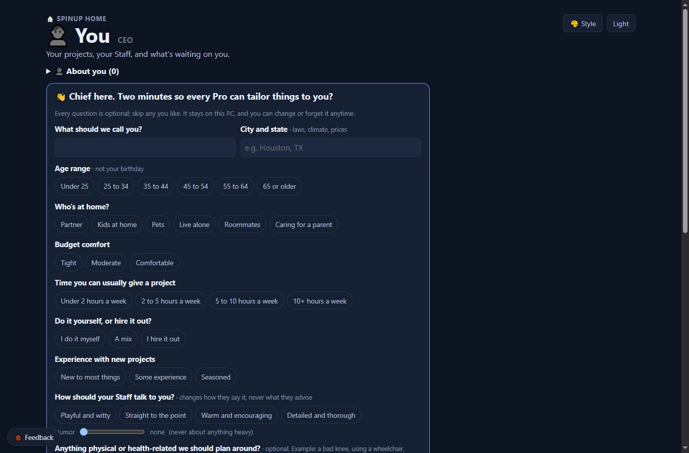
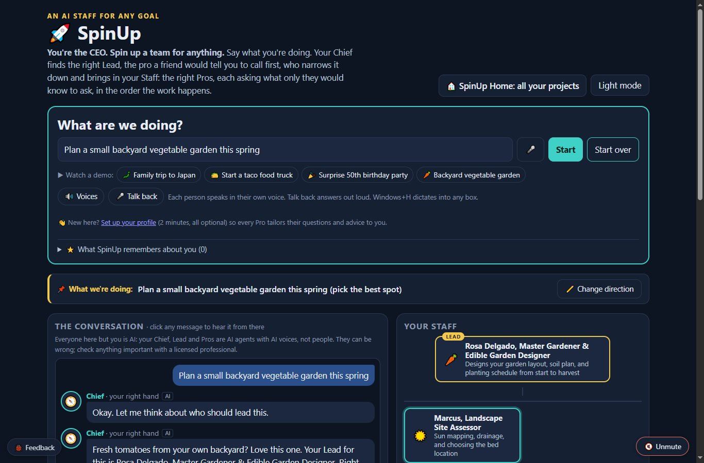
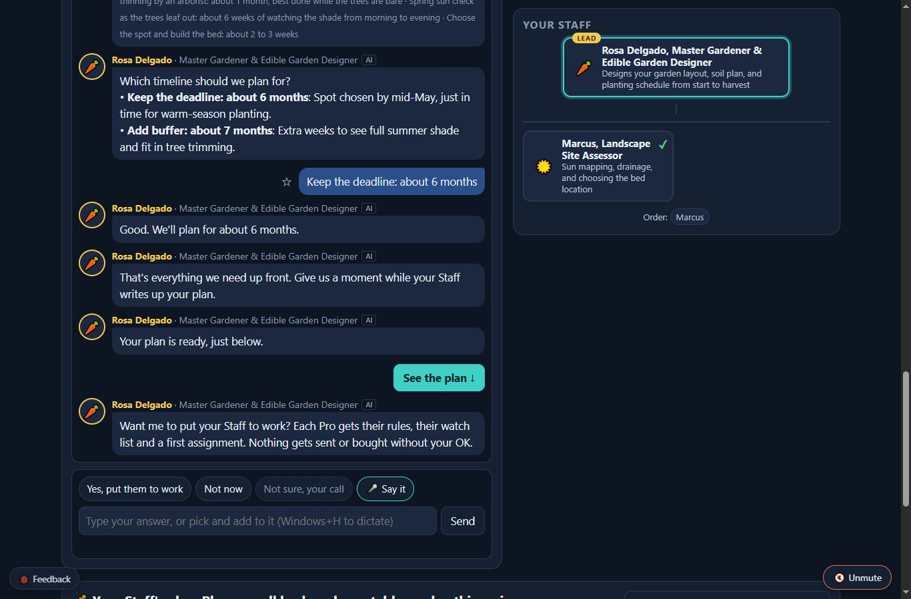
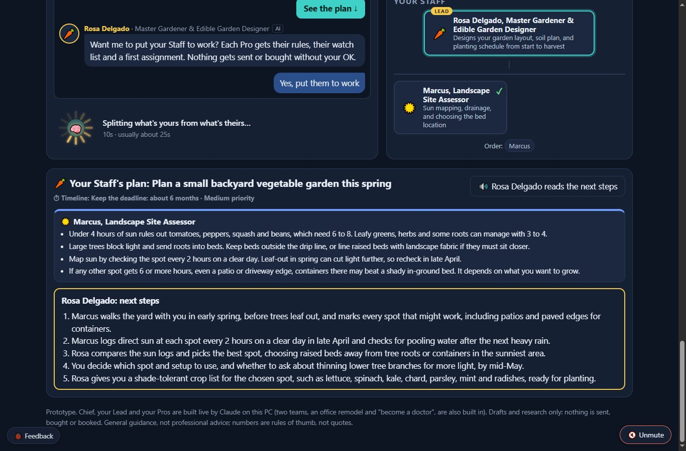
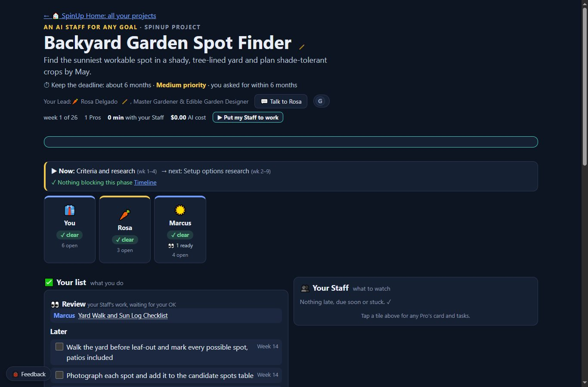
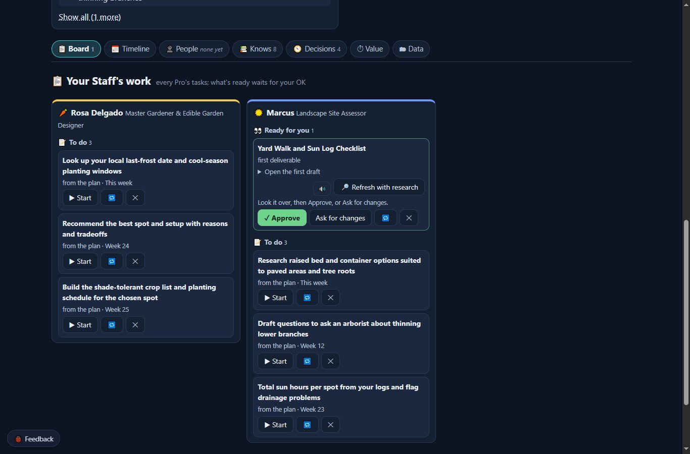
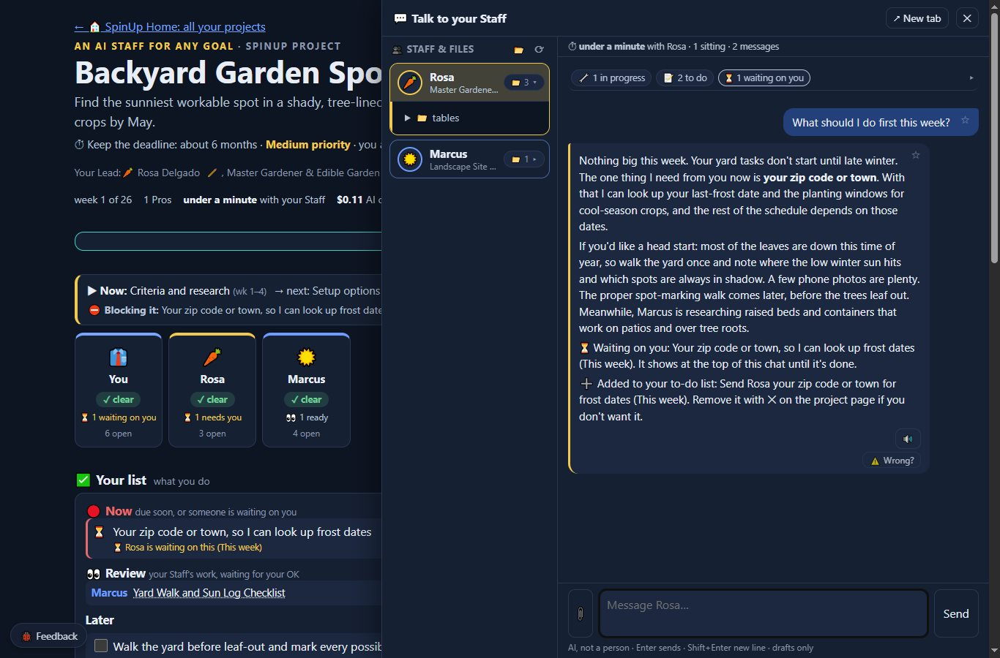
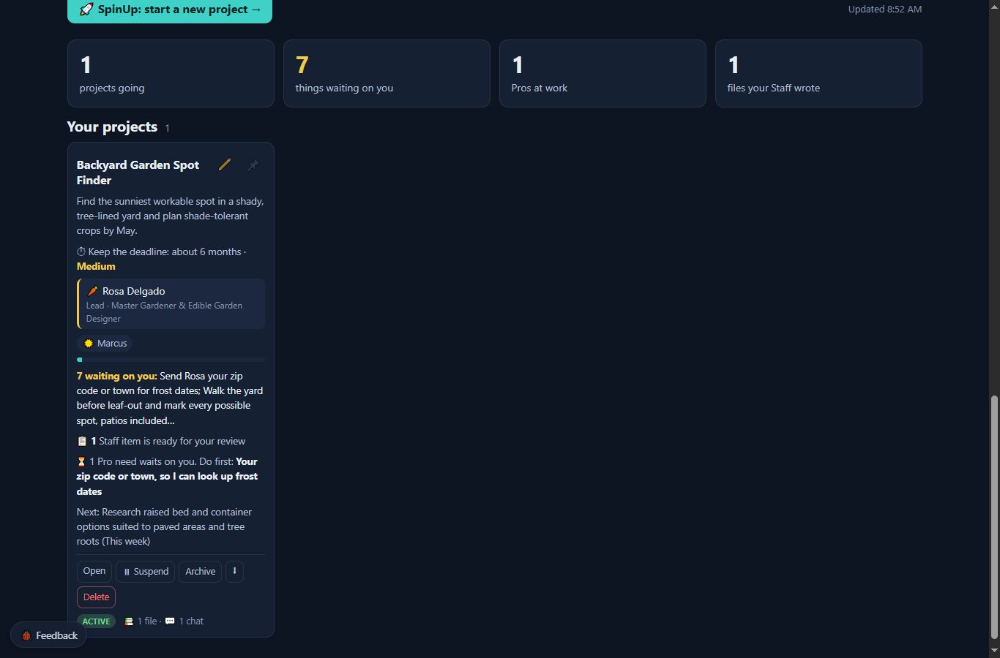
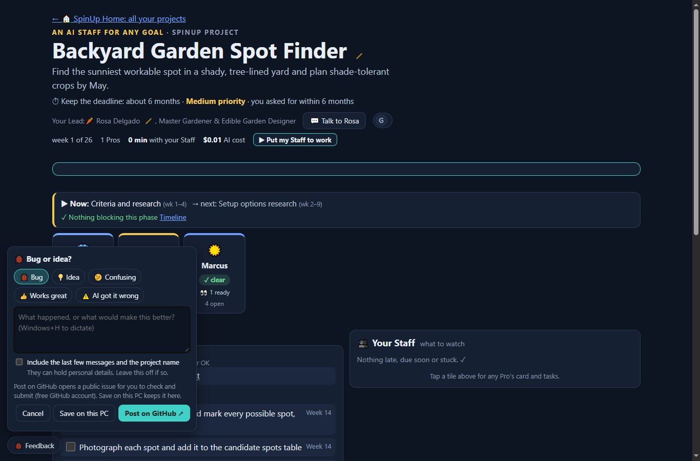

Every page, what each button does, and what each section is for. About 8 minutes with the voice on.
← → step · Space play/pause · M mute · F full screen · click a screenshot to see it bigger
Start here
You're the CEO. SpinUp gives you a staff.
Tell SpinUp a goal in plain words. It finds the right expert to lead it, brings in a team of specialists, and they do the research and drafts while you make the calls.
👤
YouThe CEO. You set the goal, answer questions, approve work and make decisions. Nothing goes out without your OK.
🧭
ChiefYour right hand, the same on every project. Finds the right Lead for each goal.
🥕
LeadThe pro a friend would tell you to call first. Owns the outcome and picks the team.
☀️
ProsThe specialists. Each asks only what they need, then does their part of the work.
You'll use three pages:
🏠 SpinUp Home All your projects and everything waiting on you.
🚀 The Start page Where you give a new goal and meet your team.
📋 A project page One per goal: your list, your Staff's work, and chats with each Pro.
Use the → arrow key or Next → to move through the slides. Click any screenshot to see it bigger. The screenshots are from a real run: "Plan a small backyard vegetable garden this spring."
SpinUp Home · first visit
Tell the Chief a little about you (optional)
The first time you open SpinUp Home, the Chief asks a few quick questions so every Pro can tailor their questions and advice to you.

SpinUp Home, first visit
Every question is optional. Skip any of them. It takes about two minutes, and you can change it later.
City and state matters most. It drives laws, climate and prices in the advice.
How should your Staff talk to you? sets the tone (witty, to the point, warm or detailed). It changes how they say things, never what they advise.
About you shows everything SpinUp remembers. It stays on your PC, and you can forget any of it.
Light switches between dark and light.
🐞 Feedback at the bottom left is on every page. More on the last slide.
The Start page
Say what you're doing
Type a real goal and press Start. The Chief picks a Lead and checks with you, then the Lead brings in the Pros.

The Start page, a minute in
What are we doing? Type your goal and press Start, or press 🎤 and say it.
Watch a demo runs an example goal and picks the answers for you, so you can sit back and watch. It's a real run, so it uses your Claude plan.
🔊 Voices has each person speak in their own voice. 🎤 Talk back lets you answer out loud.
What we're doing is the goal as the team understands it. Use ✏️ Change direction if your idea grows. New Pros join, and only what changed gets asked again.
Your Staff on the right: the Lead on top and the Pros below. A ✓ means that Pro is done asking.
The conversation: click any message to hear it again.
Start over clears it and starts a new goal.
The Start page · answering
Answer with a tap, your own words, or "Not sure"
Each Pro asks a few questions in the order the work happens. Later Pros build on your earlier answers.

Answering the Lead's last question
Tap an answer to choose it. On "pick all that apply" questions, tap several, then press Continue.
Not sure, your call lets the Pro decide. Use it freely.
Type your own answer in the box, or tap an answer and add to it. Then press Send.
🎤 Say it answers by voice. Windows+H also dictates into any box.
☆ next to one of your answers saves it as a fact about you, so no team asks again.
Before the plan, the Lead checks your timeline and tells you honestly what's realistic.
The Start page · the plan
Your plan, then "Put your Staff to work"
When the questions are done, the team writes your plan. Then the Lead asks whether to put the Staff to work.

The plan
Each Pro's box holds their advice, with real rules of thumb.
Next steps (from the Lead) are who does what, in order. Some steps are yours.
🔊 … reads the next steps reads them aloud.
Yes, put them to work gives each Pro their rules, a watch list and a first assignment, and opens the project page. It takes a minute or two.
Not now saves the plan, so you can come back to it.
Typing something new instead (for example "I also want a herb bed") works it into the plan.
The project page · the top
Everything about one goal, on one page
The top half answers two questions: what do I need to do, and what should I keep an eye on?

The project page
The title is written by your Lead. ✏️ renames it.
💬 Talk to Rosa opens a chat with your Lead.
G connects Google (Gmail and Calendar) to this project. It's read and draft only, and it's off until you turn it on.
The numbers line: the week you're in, how many Pros, time spent with your Staff, and what the AI has cost from your plan.
▶ Put my Staff to work has each Pro do its next task, one after another. Drafts only.
Now: the current phase, what's next, and anything blocking it.
Tiles: you and each Pro, with what's open or waiting. Tap one for details.
Your list (left) is what you do: Now, then Review (work waiting for your OK), then Later. Tick items as you do them; ↶ Undo if you slip. Your Staff (right) shows anything late, due soon or stuck.
The project page · the Board
Your Staff's work: approve, ask for changes, or start a task
Below your list are tabs. The Board shows every Pro's tasks. Anything "Ready for you" is waiting on your OK.

The Board tab
Ready for you:Open the first draft to read it. Then ✓ Approve (the task is done and the Staff builds on it) or Ask for changes.
🔎 Refresh with research has the Pro redo it with fresh web research.
▶ Start asks that Pro to do this task now. It comes back for your review.
🔁 runs a task by itself on a schedule (daily, weekdays or weekly).
✕ means it's no longer needed. You can bring it back.
📅 Timeline
The phases week by week, with what sets the pace.
👤 People
Real people on the project (a contractor, an arborist) and what you owe each other.
📚 Knows
What your Staff knows about this project. Remove anything that's wrong.
🧭 Decisions
Every call you made and every change of direction, so nobody re-argues it.
⏱ Value
How long you spent, what the same work would cost from a person, and the AI cost.
🗂 Data
Tables the Pros keep (for example candidate spots or quotes). You can edit them.
The project page · chat
Talk to any Pro
Each Pro remembers your project and only works in its own folder. Ask a question, give it a job, or attach a file.

Asking the Lead "What should I do first this week?"
Staff & files (left) lists each Pro. Click one to talk to them. The 📁 count opens the files they've written.
The chips on top show that Pro's work in progress, to-dos, and anything waiting on you.
When a Pro needs something from you, it says so and adds it to your list. Remove it with ✕ if you don't want it.
📎 attaches images, PDFs, Excel, Word, PowerPoint or CSV files. You can also paste a screenshot.
⚠️ Wrong? under a reply flags it. The Pro is told, so it doesn't repeat it.
☆ on a reply saves it to what the Staff knows. ↗ New tab pops the chat out.
Staying in charge
What SpinUp will and won't do
The Pros do research and drafts. You decide what happens in the real world.
Nothing is sent, posted or bought without you. Pros write drafts. You send them.
Each Pro works only in its own folder. Pros can search the web, but they can't open your other files.
Commands: a Pro can suggest a command to run on your PC, but nothing runs until you press ▶ Run. Read it first. If you aren't sure what it does, don't run it. Some commands are refused outright.
Red banner: if a web page or file tries to slip a Pro hidden instructions, SpinUp pauses that Pro and shows a red banner. Read it before you resume.
Drafts on serious topics: on legal, tax, medical, insurance or money questions, the Pros mark their work as a draft. Check it with a real professional.
Don't paste passwords or account numbers into a chat.
To stop SpinUp, close the black window. Your projects stay saved in Documents\SpinUp.
SpinUp Home · every day
One look at everything
Once you have projects, SpinUp Home is where you start each day: what's waiting on you, and what each team is doing.

SpinUp Home with a project
The counters: projects going, things waiting on you, Pros at work, and files your Staff wrote.
Each project card shows your Lead and Pros, a progress bar, what's waiting on you (do the bold one first), anything ready for review, and what's next.
Open goes to the project page. ✏️ renames it, and 📌 pins it to the top.
⏸ Suspend pauses it. Archive puts it away when it's done. ⬇ downloads the whole project as one file.
Delete removes it for good, so use Archive unless you're sure.
🚀 SpinUp: start a new project → takes you to the Start page.
Tell me how it goes
🐞 Feedback, from any page
This is an early copy. When something breaks, confuses you or works great, the Feedback button at the bottom left sends it to me.

The Feedback box
Pick a kind: Bug, Idea, Confusing, Works great, or AI got it wrong.
Say what happened in a line or two. Windows+H dictates.
Post on GitHub ↗ opens a post for you to check, then press Submit new issue. It needs a free GitHub account, and posts are public.
"Include the last few messages" helps me see what happened. Leave it unticked if the chat has anything personal.
Save on this PC keeps a note just for you. It doesn't reach me.
No GitHub account? Email me a screenshot and a line on what you were doing.
After your first project, tell me three things: was it useful, what confused you, and would you keep using it?
SpinUp is an early copy Tai built. Every Chief, Lead and Pro is an AI agent, not a person.